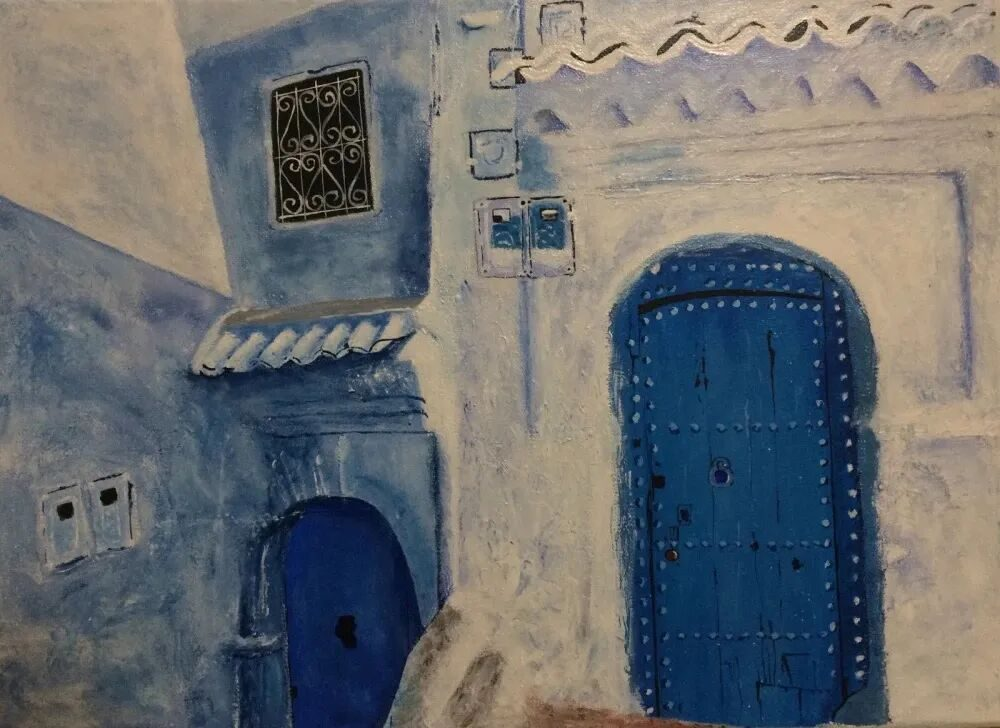
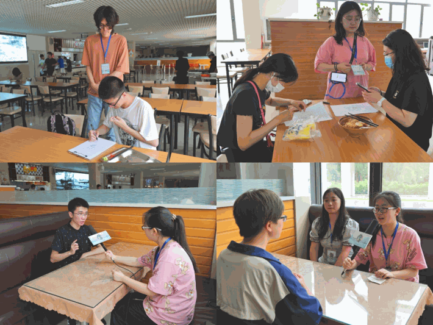
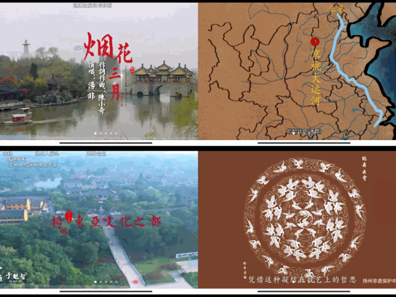
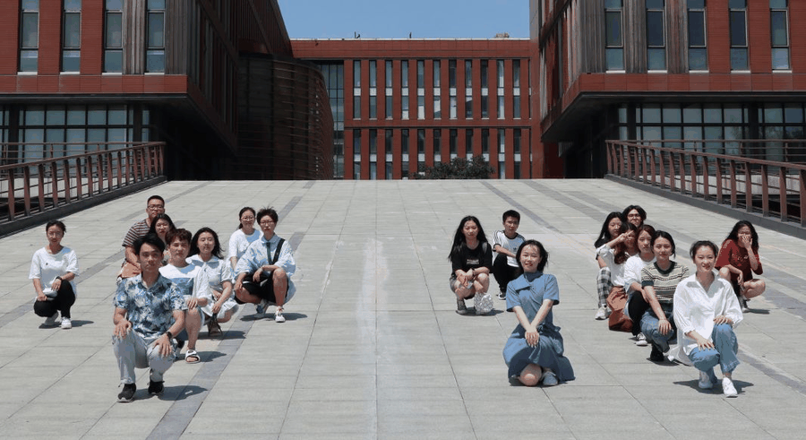

【徜扬恣肆·十一】看一眼人间烟火，淡一抹人生起落

看一眼人间烟火
淡一抹人生起落
相遇是最漫长的错过，
错过是最短暂的停留。
曾经以为，
我和扬州会有很漫长的相遇。
也许每一个土生土长的北方孩子心里都住着一个江南水乡的梦吧，我也一样，扬州好像满足了自己内心深处对温婉古风的所有向往。感觉这种内心深处对矫揉造作的憧憬实在不适合和父母一起出游时显现，挽着伴侣或者好友对着水波洌滟黯然神伤好像也不太合理，思来想去，和实践团队一起出发仿佛是绝妙的安排。

从最开始在消息通知群里看到通知，到准备面试，到二面，到见面会，到团建……感觉这个过程都很顺利，也认识到了许多可爱的人，内心的期待和热爱让多巴胺一直在那些日子里一直释放，枯燥的小学期也显得格外有趣。不是很喜欢用遗憾去评价一段时光，但好像这次我们确实是最终无奈的向天灾人祸妥协。
还好，
我们都在努力的不让遗憾成为遗憾。
温婉的扬州这次没能逃过疫情的洗礼，越来越严峻的局势也让很多线上调研计划成为泡影。虽然大家一起在线上观看相关文化科普视频占了绝大部分安排，成员们还是每天坚持分享学习感悟，积极讨论。

从扬州的非遗文化谈起，雕版印刷，古老的技艺世代坚守，字里行间四散出千年的墨香；到扬州盐商的奢靡成性，人间一串说尽人间五味；大运河贯通南北，联系古今，见证了扬州千年的文化底蕴……当然要特别感谢付媛学姐一直在东奔西跑的为了充实实践内容努力着，在当时扬州严峻的形势下依旧为我们联系到了倪主任的线上采访，主任博学古今，带领大家对扬州和扬州八怪的精神内涵以及艺术魅力进行了深入探讨，关于传统文化的存留和兴旺，我也是第一次有了这么深沉的思考。
未来，
我们还会有很多很多不会错过的相遇。

看行者，流火七月说淮扬；赞无疆，月明桥上唱杜郎。扬州的故事在这个夏天就落下帷幕了，可是行者的故事还在继续，我们未来还有很多很多不会错过的相遇。
END
来源 | 行者无疆实践团
编辑 | 林嘉欣
审核 | 付媛 康艳虎